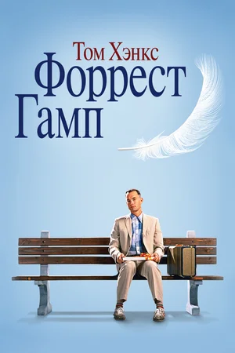

1 МЕСТО

ПОБЕГ ИЗ ШОУШЕНКА
Бухгалтер Энди Дюфрейн обвинён в убийстве собственной жены и её любовника. Оказавшись в тюрьме под названием Шоушенк, он сталкивается с жестокостью и беззаконием, царящими по обе стороны решётки. Каждый, кто попадает в эти стены, становится их рабом до конца жизни. Но Энди, обладающий живым умом и доброй душой, находит подход как к заключённым, так и к охранникам, добиваясь их особого к себе расположения.
2 МЕСТО
ЗЕЛЁНАЯ МИЛЯ
Пол Эджкомб — начальник блока смертников в тюрьме «Холодная гора», каждый из узников которого однажды проходит «зеленую милю» по пути к месту казни. Пол повидал много заключённых и надзирателей за время работы. Однако гигант Джон Коффи, обвинённый в страшном преступлении, стал одним из самых необычных обитателей блока.

3 МЕСТО
ВЛАСТЕЛИН КОЛЕЦ: ВОЗВРАЩЕНИЕ КОРОЛЯ
Последняя часть трилогии о Кольце Всевластия и о героях, взявших на себя бремя спасения Средиземья. Повелитель сил Тьмы Саурон направляет свои бесчисленные рати под стены Минас-Тирита, крепости Последней Надежды. Он предвкушает близкую победу, но именно это и мешает ему заметить две крохотные фигурки — хоббитов, приближающихся к Роковой Горе, где им предстоит уничтожить Кольцо Всевластия. Улыбнется ли им счастье?
4 МЕСТО
ИНТЕРСТЕЛЛАР
Когда засуха, пыльные бури и вымирание растений приводят человечество к продовольственному кризису, коллектив исследователей и учёных отправляется сквозь червоточину (которая предположительно соединяет области пространства-времени через большое расстояние) в путешествие, чтобы превзойти прежние ограничения для космических путешествий человека и найти планету с подходящими для человечества условиями.

5 МЕСТО
ВЛАСТЕЛИН КОЛЕЦ: БРАТСТВО КОЛЬЦА
Тихая деревня, где живут хоббиты. Волшебник Гэндальф, придя на 111-й день рождения к своему старому другу Бильбо Бэггинсу, начинает вести разговор о кольце, которое Бильбо нашел много лет назад. Это кольцо принадлежало когда-то темному властителю Средиземья Саурону, и оно дает большую власть своему обладателю. Теперь Саурон хочет вернуть себе власть над Средиземьем.
6 МЕСТО
ВЛАСТЕЛИН КОЛЕЦ: ДВЕ КРЕПОСТИ
Братство распалось, но Кольцо Всевластья должно быть уничтожено. Фродо и Сэм вынуждены доверить свои жизни Голлуму, который взялся провести их к вратам Мордора. Громадная Армия Сарумана приближается: члены братства и их союзники готовы принять бой. Битва за Средиземье продолжается.

7 МЕСТО
- 
ФОРРЕСТ ГАМП
От лица главного героя Форреста Гампа, слабоумного безобидного человека с благородным и открытым сердцем, рассказывается история его необыкновенной жизни. Фантастическим образом превращается он в известного футболиста, героя войны, преуспевающего бизнесмена. Он становится миллиардером, но остается таким же бесхитростным, глупым и добрым.
8 МЕСТО
СПИСОК ШИНДЛЕРА
Фильм рассказывает реальную историю загадочного Оскара Шиндлера, члена нацистской партии, преуспевающего фабриканта, спасшего во время Второй мировой войны почти 1200 евреев.
9 МЕСТО
ИВАН ВАСИЛЬЕВИЧ МЕНЯЕТ ПРОФЕССИЮ
Инженер-изобретатель Тимофеев сконструировал машину времени, которая соединила его квартиру с далеким шестнадцатым веком — точнее, с палатами государя Ивана Грозного. Туда-то и попадают тезка царя пенсионер-общественник Иван Васильевич Бунша и квартирный вор Жорж Милославский.
10 МЕСТО